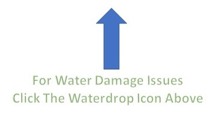

Interior Painting
- A Reputable Team of Clean, Neat, & Dependable Interior Painters
- Consider using our interior painting service if you prefer
high-quality, low VOC, or biodegradable paint options. Instead of
going the inexpensive route, many owners typically select a higher-quality
paint that leads to more vibrant colors and a more dramatic finish. Some of
our clients include doctors, lawyers, and other high-profile clients who
expect nothing short of the best. Call us today to request a free, no-obligation
estimate. We will conduct a complete walk-through with you and identify any
specific areas of concern to calculate a detailed and concise estimate.. - Complete Remodeling Services & Professional Interior Painting
- When you choose our experienced contractors, you can rest
assuredknowing you will receive a thorough service from start to
finish. Before painting begins, we prep the area with a variety of
services, including power washing, caulking, crack sealing,
and protecting non-paint surfaces from over-spray and dripping.
In addition, we sand or replace any rotting wood instead of covering
it with a coat of paint. Pricing ranges from .75 to .85 cents per
square-foot, not including corrective repairs or color changes.
